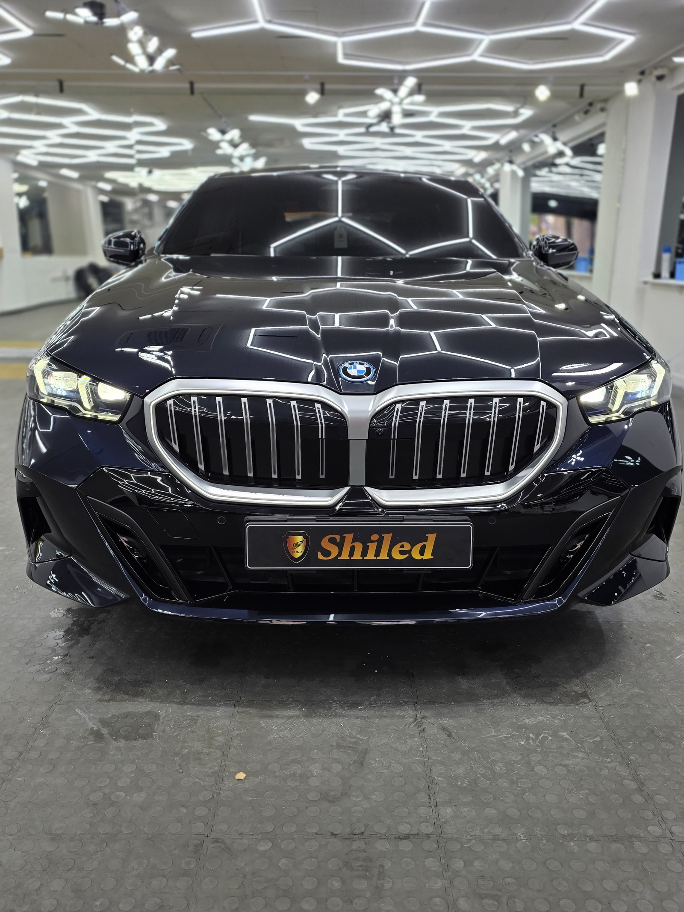
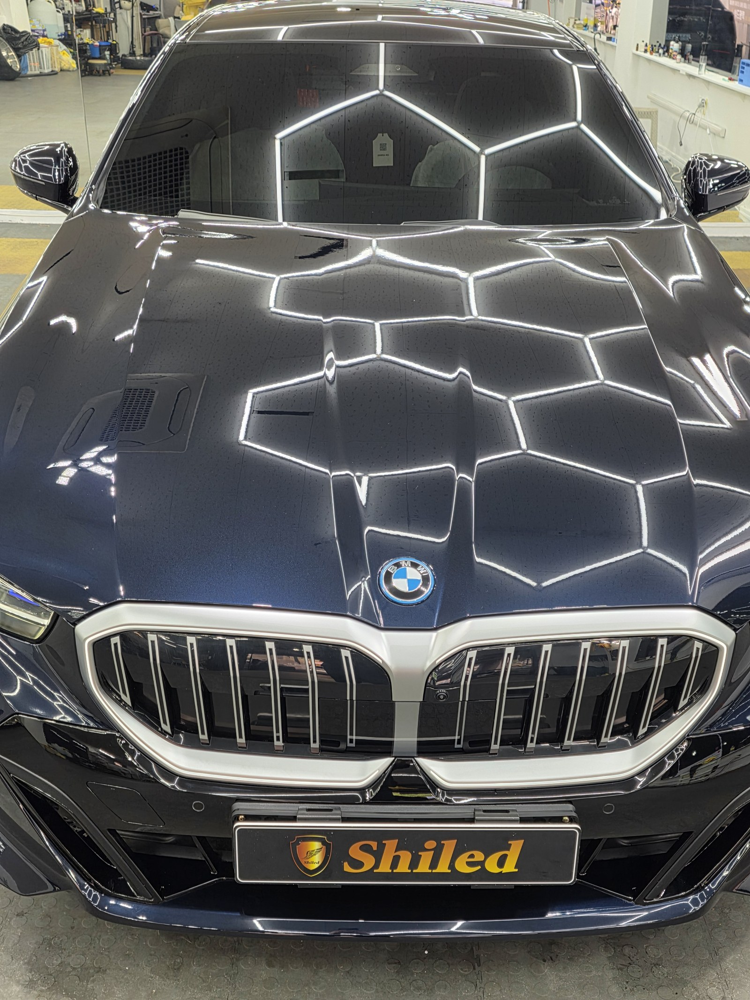
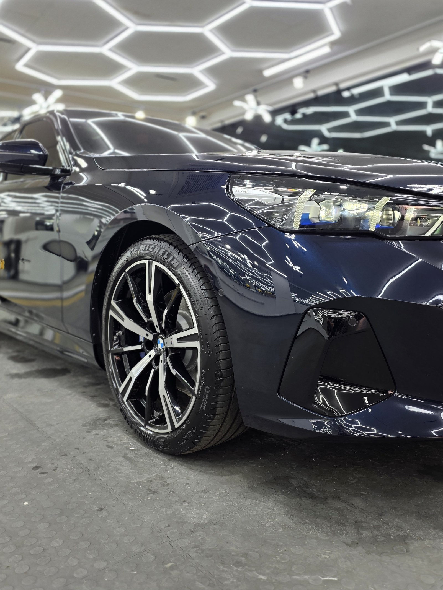
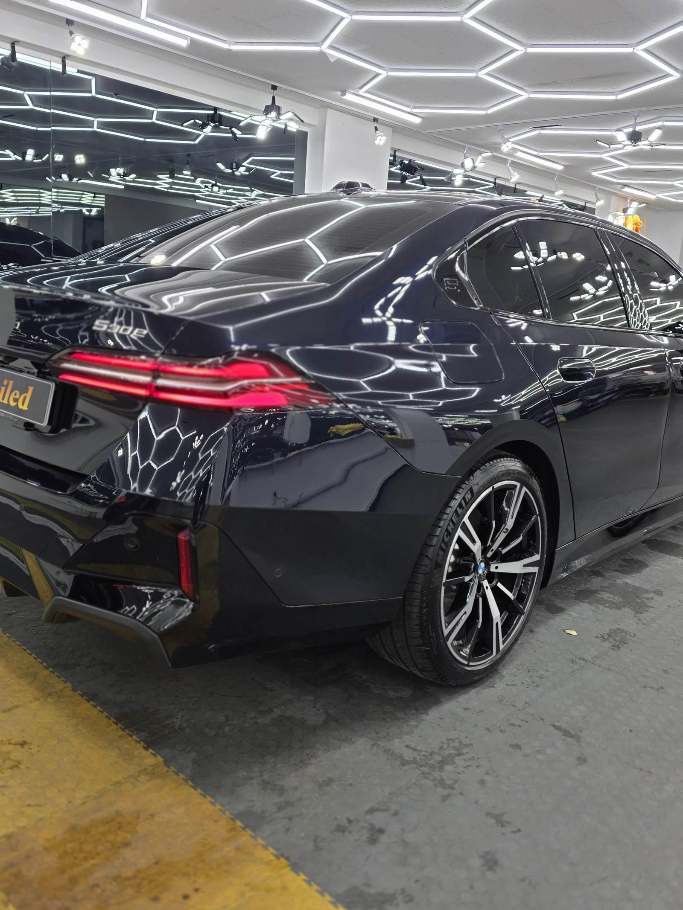
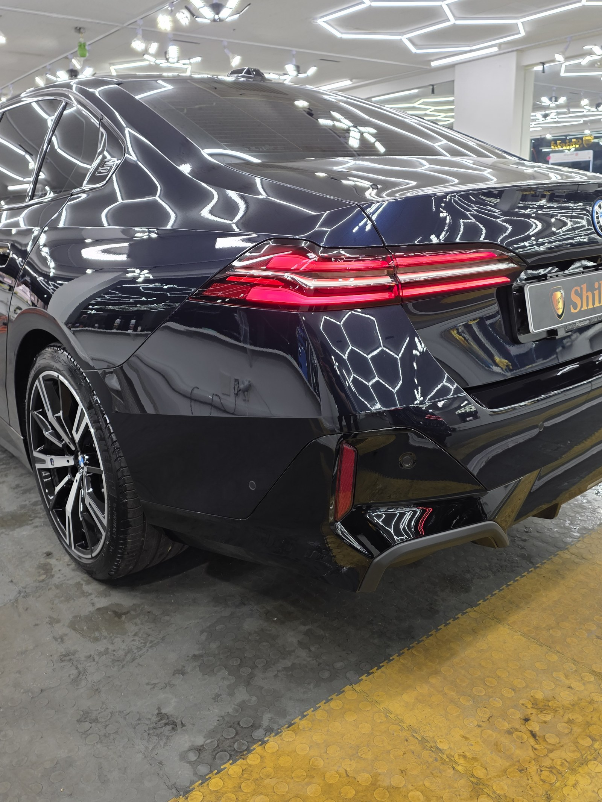
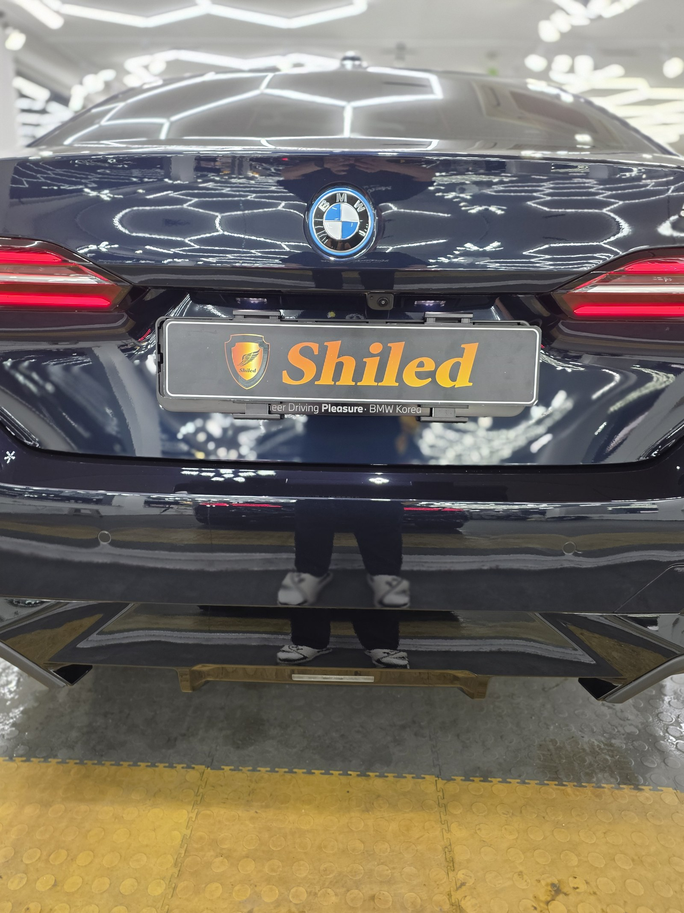
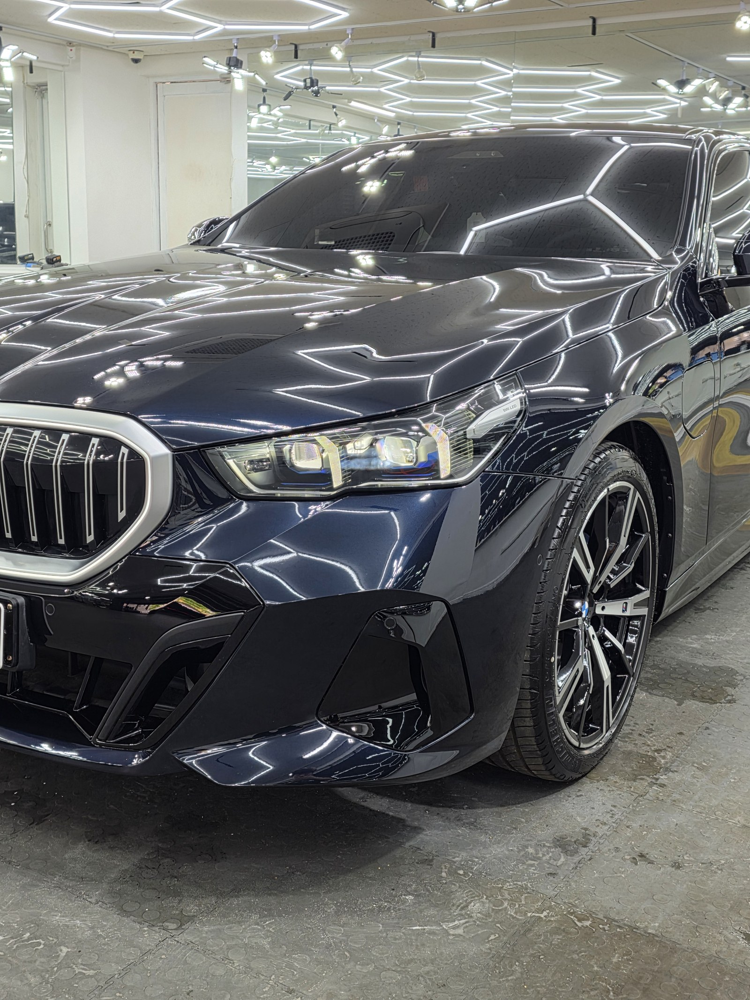
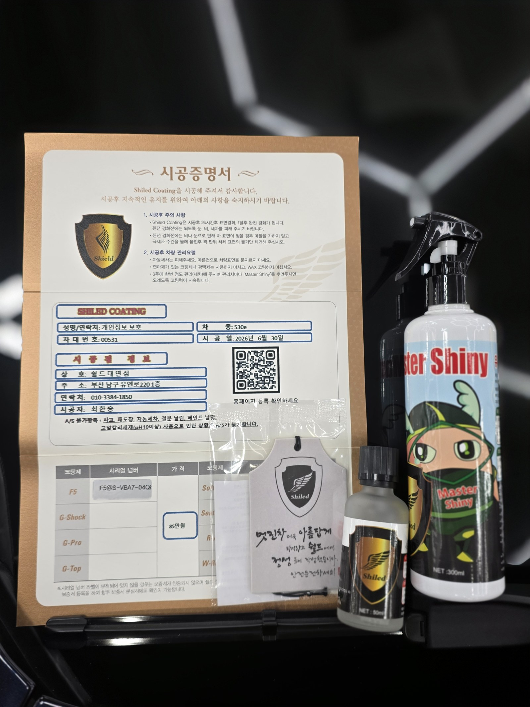

BMW 530e 블루입니다. 아직 출고 전, 새 차입니다.
플러그인 하이브리드 모델이고, 이 차는 출고 전에 F5 유리막코팅으로 진행했습니다.
부산 유리막코팅을 알아보고 계시다면 참고하시라고 작업 과정을 정리해봅니다.

블루 530e도 유리막코팅이 꼭 필요한가
짙은 블루는 블랙 못지않게 스월마크가 잘 보이는 색입니다.
밝은 색과 달리 짙은 블루는 표면에 잔기스나 세차기스가 생기면 빛을 받을 때 그대로 드러납니다. 신차라고 예외가 아닙니다. 출고 전 F5로 도장면을 먼저 보호해두면, 이후 세차와 관리 과정에서 생기는 미세 손상을 최소화할 수 있습니다. 부산 유리막코팅을 출고 전에 권하는 이유가 여기 있습니다.

블루 530e에 왜 F5인가
F5는 색감 깊이를 끌어올려 글로시함을 극대화하는 코팅입니다.
짙은 블루는 자칫 채도가 눌려 밋밋하게 보이기 쉬운데, F5를 올리면 표면 반사가 또렷해져 색감이 한층 살아납니다. 530e 특유의 길고 매끈한 보닛과 넓은 도어 패널 위로 벌집 조명이 그대로 비칠 만큼 반사가 매끄럽게 흐릅니다. 코팅제는 대표가 화학공학 전공으로 직접 개발·제조한 제품입니다.


기술자의 팁
신차라고 바로 코팅을 올리지 않습니다. 운송·보관 중 묻은 미세 오염을 디테일링 세차와 탈지로 걷어낸 뒤에 올립니다. 깨끗한 바탕 위에 올려야 코팅이 제대로 밀착합니다. 플러그인 하이브리드는 충전 때문에 야외에 서 있는 시간이 길어질 수 있는 만큼, 출고 직후 코팅이 특히 유리합니다.



시공증명서를 함께 드립니다
모든 시공 차량에 시공증명서를 드립니다.
차종·시공일·코팅제 시리얼 번호가 적혀 있고, 홈페이지에 등록해 보증을 받으실 수 있습니다. 이 차는 2026년 6월 30일 F5 코팅으로 기록돼 있습니다.

차종·시공일·코팅제 시리얼이 기재된 시공증명서
자주 묻는 질문
Q. 블루 530e도 유리막코팅이 꼭 필요한가요?
A. 필요합니다. 짙은 블루는 블랙 못지않게 스월마크와 잔기스가 잘 보이는 색입니다. 출고 전 F5로 표면을 먼저 잡아두면 오염과 손상을 원천에서 줄일 수 있습니다.
Q. 블루 530e에는 어떤 코팅이 좋나요?
A. 이 차는 F5로 진행했습니다. 짙은 블루 특유의 채도를 살려 반사가 또렷해지고 색감이 깊어집니다.
Q. 플러그인 하이브리드도 신차코팅이 필요한가요?
A. 필요합니다. 구동계와 무관하게 도장면 관리는 동일합니다. 충전으로 야외 주차 시간이 길어질 수 있는 만큼 출고 직후 코팅이 유리합니다.
Q. 신차코팅도 전처리를 하나요?
A. 합니다. 신차라도 운송·보관 중 미세 오염이 묻습니다. 디테일링 세차와 탈지로 표면을 정리한 뒤 코팅을 올려야 제대로 밀착합니다.
Q. 쉴드광택 위치와 예약은 어떻게 하나요?
A. 부산 남구 유엔로220 1F 쉴드광택입니다. 예약·상담은 010-3384-1850, 대표 최한중이 직접 상담하고 책임 시공합니다.
새 차일수록 시작점이 다릅니다. 가장 깨끗할 때 입혀두십시오.
제품을 직접 만드는 사람이 직접 시공합니다.
유리막코팅을 고민 중이시면 편하게 연락 주십시오.
어떤 차를 타냐보다 어떻게 타냐가 중요합니다~!
시공 중에는 전화를 받지 못할 때가 많습니다.
카카오톡으로 차종과 원하시는 시공을 남겨주시면 확인 후 답변드립니다.
쉴드광택 · 부산 남구 유엔로220 1F · 대표 최한중